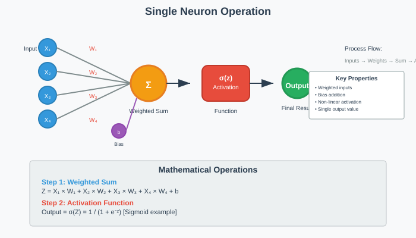
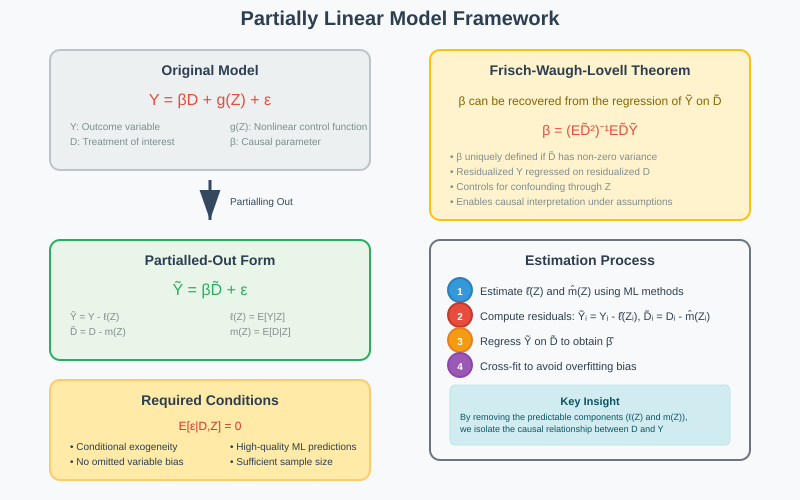
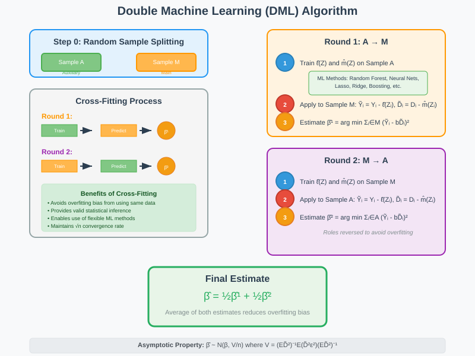
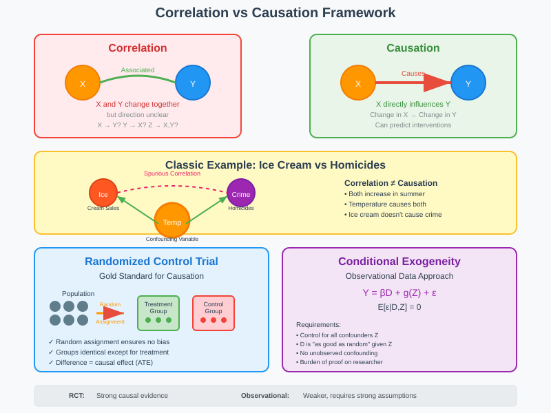

Neural Networks, Regression, and Causal Inference

A comprehensive guide to neural network regression, advanced inference methods, and causal analysis techniques.
📚 Quick Navigation
- 🧠 Neural Networks for Regression
- 📊 Advanced Inference Methods
- 🔍 Causal Inference Framework
- 📈 Practical Applications
- 📚 References & Further Reading
🧠 Neural Networks for Regression
Overview
Neural networks are a subset of machine learning algorithms inspired by the human brain's structure and function. They excel at approximating complex nonlinear relationships between input features and target variables, making them powerful tools for regression analysis.

Core Architecture Components
Neural networks consist of interconnected layers of processing units called neurons:
Input Layer - Passive layer that holds input data - Represents feature vector describing input characteristics - No processing occurs at this layer
Hidden Layers - Process information from previous layers - Each neuron performs weighted summation and applies activation function - Multiple hidden layers enable deep learning capabilities
Output Layer - Produces final predictions - For regression: outputs continuous real numbers - Single neuron for univariate regression
Single Neuron Operations

A neuron performs three fundamental operations:
- Weighted Input Summation
Z = X₁ × W₁ + X₂ × W₂ + X₃ × W₃ + X₄ × W₄
- Bias Addition
Z = Z + b
- Activation Function Application
Output = σ(Z)
Single Layer Neural Networks
For a network with M neurons in the hidden layer:
Hidden Layer Outputs:
O₁ = σ(X₁ × W₁₁ + X₂ × W₁₂)
O₂ = σ(X₁ × W₂₁ + X₂ × W₂₂)
O₃ = σ(X₁ × W₃₁ + X₂ × W₃₂)
Final Output:
ŷ = β₁ × O₁ + β₂ × O₂ + β₃ × O₃
Mathematical Formulation:
ŷ(Z) = Σ(m=1 to M) βₘ × Xₘ(αₘ)
Where:
- Xₘ(αₘ) = σ(α'ₘZ) represents the m-th constructed regressor
- αₘ are the weights for the hidden layer
- βₘ are the weights for the output layer
Activation Functions
Sigmoid Function:
σ(v) = 1 / (1 + e⁻ᵛ)
Properties: - Maps any real number to (0,1) - Smooth, differentiable - Introduces non-linearity
Alternative Functions:
- ReLU: f(x) = max(0, x)
- Tanh: f(x) = tanh(x)
- Leaky ReLU: f(x) = max(0.01x, x)
Optimization and Training
Objective Function:
min Σᵢ(Yᵢ - Σₘ₌₁ᴹ β'ₘXₘ(αₘ))² + λ(Σₘ|αₘⱼ| + Σₘ|βₘ|)
Components: - Loss Term: Sum of squared prediction errors - Penalty Term: L1 regularization (Lasso-type) - λ: Penalty level controlling overfitting
Training Characteristics: - Non-convex optimization problem - Requires sophisticated gradient descent algorithms - Multiple local minima possible - Cross-validation for hyperparameter tuning
📊 Advanced Inference Methods
Partially Linear Models

The partially linear model framework enables causal inference in high-dimensional settings:
Y = βD + g(Z) + ε
Where:
- Y: Outcome variable
- D: Treatment/regressor of interest
- Z: High-dimensional control variables
- g(Z): Unknown nonlinear function of controls
- β: Causal parameter of interest
Key Assumption:
E[ε | Z, D] = 0
Frisch-Waugh-Lovell Theorem
Partialled-Out Form:
Ỹ = βD̃ + ε, E(εD̃) = 0
Where residuals are defined as:
Ỹ := Y - ℓ(Z)
D̃ := D - m(Z)
Coefficient Formula:
β = arg min E(Ỹ - bD̃)² = (ED̃²)⁻¹ED̃Ỹ
Double Machine Learning Algorithm

Step 1: Sample Splitting
- Randomly divide data into auxiliary sample (A) and main sample (M)
- Use A to estimate ℓ̂(Z) and m̂(Z)
- Apply to M to get residuals: Ỹᵢ = Yᵢ - ℓ̂(Zᵢ), D̃ᵢ = Dᵢ - m̂(Zᵢ)
Step 2: Coefficient Estimation
β̂¹ = arg min Σᵢ∈M (Ỹᵢ - bD̃ᵢ)²
Step 3: Role Reversal
- Reverse roles of A and M
- Obtain second estimate β̂²
Step 4: Final Estimate
β̂ = ½β̂¹ + ½β̂²
Inference Theory
Asymptotic Distribution:
β̂ ~ N(β, V/n)
Where:
V = (ED̃²)⁻¹E(D̃²ε²)(ED̃²)⁻¹
Confidence Intervals:
[β̂ - 2√(V̂/n), β̂ + 2√(V̂/n)]
Coverage: Approximately 95% for most data realizations
Case Study: Gun Ownership and Homicide Rates
Model Specification:
Yⱼ,ₜ = βDⱼ,ₜ₋₁ + g(Zⱼ,ₜ) + εⱼ,ₜ
Variables:
- Yⱼ,ₜ: Log homicide rate in county j at time t
- Dⱼ,ₜ₋₁: Log fraction of suicides with firearms (gun ownership proxy)
- Zⱼ,ₜ: County demographic and economic characteristics
Data: - 195 large US counties, 1980-1999 - 3,900 observations total - Controls: age distribution, income, crime rates, federal spending
Results Summary:
| Method | Estimate | 95% Confidence Interval |
|---|---|---|
| Least Squares | 0.227 | [0.115, 0.339] |
| Lasso | 0.242 | [0.124, 0.360] |
| Random Forest | 0.252 | [0.078, 0.426] |
| Neural Network | 0.291 | [0.081, 0.501] |
| Best Method | 0.244 | [0.130, 0.358] |
Interpretation: A 1% increase in gun ownership leads to approximately 0.24% increase in gun homicide rates.
🔍 Causal Inference Framework
Correlation vs Causation

Correlation: Statistical relationship indicating variables change together
Causation: One variable directly influences another
Key Distinction: Correlation ≠ Causation
Classic Example: Ice cream sales correlate with homicides in New York - Correlation: Both increase in summer - Causation: Temperature is confounding variable - Conclusion: Ice cream doesn't cause homicides
Randomized Control Trials (RCTs)
Gold Standard Design:
Y = α + βD + u, E[u(1,D)] = 0
Key Properties: - Random Assignment: Treatment D assigned independently of potential outcomes - Balanced Groups: No systematic differences at baseline - Causal Identification: β measures Average Treatment Effect (ATE)
RCT Process: 1. Random assignment to treatment/control groups 2. Treatment administration 3. Outcome measurement 4. Statistical comparison
Business Applications: - A/B Testing for product features - Marketing campaign effectiveness - User interface optimization
Conditional Random Assignment
When RCTs Unavailable:
Y = βD + g(Z) + ε, E(ε|D,Z) = 0
Conditional Exogeneity: Variation in D is "as good as random" conditional on controls Z
Requirements: - Include Controls: Must control for Z to ensure causal interpretation - Assumption Validity: Researcher must justify conditional randomness - Burden of Proof: Data scientist must convince others assumption holds
Causal Identification Strategies
Strategy 1: Pure Random Assignment - No controls needed for causal identification - Controls can improve precision - Strongest causal evidence
Strategy 2: Conditional Random Assignment - Controls essential for causal identification - Must control for all confounding variables - Weaker than pure randomization
Strategy 3: Observational Data - Requires strong assumptions - Difficult to establish causality - Susceptible to confounding bias
Case Study Applications
Gun Ownership Study: - Assumption: Gun ownership variation conditional on demographics is "as good as random" - Challenge: Unobserved factors may still confound relationship - Interpretation: Effect may or may not be causal depending on assumption validity
Gender Wage Gap Study: - Finding: Women earn $2/hour less controlling for education, experience, location - Causal Claim: Requires believing gender variation is random conditional on controls - Alternative: Differences could reflect unobserved factors
📈 Practical Applications
Implementation Guidelines
Neural Network Regression: 1. Data Preprocessing: - Normalize input features - Handle missing values - Split data for training/validation
- Architecture Design:
- Start with single hidden layer
- Tune number of neurons via cross-validation
-
Consider regularization (L1/L2)
-
Training Process:
- Use appropriate optimizers (Adam, SGD)
- Monitor training/validation loss
- Implement early stopping
Double Machine Learning: 1. Sample Splitting: - Ensure random assignment to folds - Balance treatment/control across folds - Consider stratified splitting
- Model Selection:
- Cross-validate on auxiliary sample
- Choose best performing models
-
Consider ensemble methods
-
Inference:
- Calculate standard errors properly
- Report confidence intervals
- Conduct robustness checks
Software Implementation
Python Libraries: - Neural Networks: TensorFlow, PyTorch, Keras - Double ML: DoubleML, EconML - Statistical Analysis: statsmodels, scikit-learn
R Packages: - Neural Networks: nnet, neuralnet - Causal Inference: DoubleML, grf - Statistical Analysis: caret, randomForest
Best Practices
Model Development: - Start simple, increase complexity gradually - Always validate assumptions - Report uncertainty measures - Conduct sensitivity analyses
Causal Claims: - Clearly state identification assumptions - Discuss potential confounders - Consider alternative explanations - Be transparent about limitations
📚 References & Further Reading
Key Papers
- Chernozhukov et al. (2018) - "Double/Debiased Machine Learning for Treatment and Structural Parameters"
- Belloni et al. (2014) - "Inference on Treatment Effects after Selection among High-Dimensional Controls"
- Angrist & Pischke (2008) - "Mostly Harmless Econometrics"
Neural Networks
- Goodfellow et al. (2016) - "Deep Learning"
- Hastie et al. (2009) - "Elements of Statistical Learning"
Causal Inference
- Pearl (2009) - "Causality: Models, Reasoning and Inference"
- Imbens & Rubin (2015) - "Causal Inference for Statistics, Social, and Biomedical Sciences"
- Morgan & Winship (2015) - "Counterfactuals and Causal Inference"
Practical Resources
- Hugging Face Transformers - State-of-the-art neural networks
- TensorFlow Playground - Interactive neural network visualization
- Coursera Machine Learning - Foundational ML course
This documentation provides a comprehensive overview of neural networks for regression, advanced inference methods, and causal analysis. For implementation details and code examples, refer to the accompanying Colab notebooks.